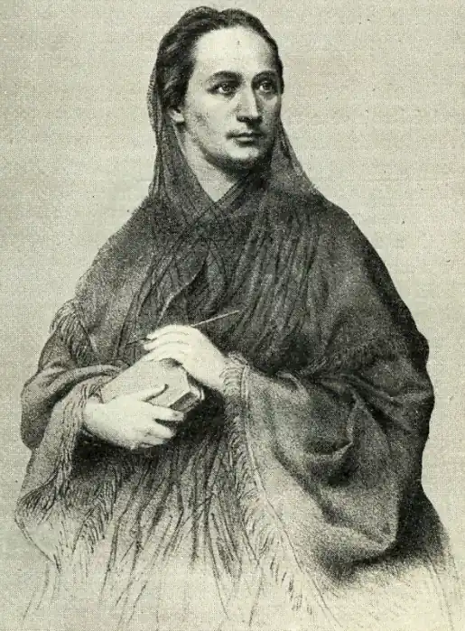

Нємцова Божена (Nemcova, Bozena — 04.02.1820, Відень — 21.01.1862, Прага) — чеська письменниця. Нємцова — видатний чеський прозаїк XIX ст., майстер "сільської" прози. Вона відобразила у своїх творах не лише побут, а й світогляд селян Чехії та Словаччини, її творчість пронизана духом патріотизму та народності. Казки Н., низка її оповідань і передусім повість "Бабуся" увійшли в золотий фонд чеської літератури.
Нємцова народилася у Відні і була позашлюбною дитиною чеської покоївки Терезії Новотної та фірмана-німця Йоганна Панкла. Невдовзі після її народження батьки зареєстрували шлюб і переїхали в Ратиборжице (неподалік від м.Ческа Скаліце), де служили в герцогині Заганьської. Вихованням Божени переважно займалася її бабуся Магдалина Новотна, котра прищепила внучці не лише високі моральні ідеали, а й любов до народу, його побуту, мови, фольклору. Близькість до панського двору також вплинула на розвиток дівчинки, з одного боку, розвинувши її культурно, а з другого — дозволивши їй побачити всю повноту соціальних контрастів. Н. закінчила тільки початкову школу, але була досить добре освічена; гостюючи в родині панського управителя у Звалковицях, вона ознайомилася з німецькою літературою, передусім із творчістю Й.К.Ф. Шиллера. У 17 років її видали заміж за урядового чиновника Йозефа Нємеца, по суті, чужого їй за своїми інтересами та характером. Проте саме завдяки йому Нємцова, перебуваючи у Празі (1842—1845), зблизилася з передовою творчою інтелігенцією, передусім з поетом В. Б. Небеским, під впливом котрого почала писати. її талант розвинувся у Ходському краї (півд. схід Чехії), де вона жила спочатку у м. Домажлице, потім — в м. Вишеруби. з 1845 до 1848 р. вивчаючи побут і фольклор ходів.
Після 1848 р. Й. Немец як чеський патріот зазнав гонінь; творчість Н. владі теж не подобалася. Подружжя з чотирма дітьми було змушене переїхати спочатку в Німбурк, а потім у Ліберец, у 1850 р. Нємеца направили в Угорщину. Нємцова з дітьми переїхала у Прагу, де прожила 12 важких років: помер її старший син Гінек, вона сама важко хворіла, до цього після звільнення чоловіка додалися матеріальні нестатки. Восени 1861 р. Нємцова поїхала у Літомишль. аби видати там свої твори; захворівши, вона повернулась у Прагу і там невдовзі померла. Першими творами Нємцова були вірші патріотичного, ліричного та феміністичного характер), написані під впливом В.Б. Небеского й опубліковані у журналах ("Славний ранок", "Жінка:': Чехії" та ін.). Проте справжнім її дебютом стали "Народні казки та легенди" ("Narodnf bachork;. a povesti", 1845—1847), зібрані у Ходському краї та в північно-східній Чехії. Тісніше пов'язані з фольклором і більш зрілою рукою написані "Словацькі кажи та повісті" ("Slovenske pohadb a povesti", 1857—1858), матеріал для яких Нємцова черпала зі своїх подорожей по Словаччині у 50-х pp. У 40-х pp. Нємцова публікувала в періодиці публіцистичні статті, що мали спочатку етнографічний, краєзнавчий характер, хоча в них часте фігурують актуальні політичні мотиви ( "Образки з Домажлицьких околиць" — "Obrazy z okoli domazlickeho" та ін.). Неприховані симпатії до простого народу та неприйняття буржуазії спричинювали вкрай негативне ставлення до Н. буржуазної преси, з якою про творчість Нємцова полемізував на сторінках журналу "Ческа вчела" один із найзначніших тогочасних письменників К. Гавлічек. Значною мірою краєзнавчий характер мали перші спроби Нємцової у жанрі "сільського" оповідання. Це були нариси про Домажлиці: "Довга ніч", "Сільський образок". Її подальші оповідання, що змальовують, зазвичай, долю однієї жінки. — свідчення зростаючої майстерності: "Барушка", "Сестри", "Розарка". Своєрідність стилю Нємцової поглиблюється в оповіданнях "Карла" ("Karla", 1855), "Дика Бара" ("Diva Вага", 1856). У зображенні сільського життя дедалі більше проявляються реалістичні елементи, характери набувають виразності та психологічної переконливості. У роки глибокої особистої кризи, після смерті сина, Нємцова написала свій найкращий твір — повість "Бабуся" ("Babicka"), навіяну споминами про дитинство та її бабусю, про віднайдену радість творчості. Бажання віднайти гармонійний світ, нехай навіть такий швидкоплинний і хисткий, як світ дитинства, спричинило певну ідеалізацію образів. При цьому Нємцова розуміла, що діти вже змалку бачать чимало життєвих суперечностей. Центральна постать повісті — бабуся — втілення позитивних рис чеського народу, моральний ідеал і приклад для наслідування. Дидактична тенденція жодною мірою не знижує художньої вартості книги, а органічно пов'язана з бабусею, берегинею народних традицій, що увібрала досвід і мудрість багатьох поколінь. Тому бабуся знаходить вихід з будь-якої життєвої ситуації, викликаючи повагу своєю чистотою, мудрістю навіть у "пані княгині". Сюжет повісті пов'язаний із річним календарно-обрядовим циклом життя та звичаїв, що дозволяє Нємцовій вільно чергувати сцени й епізоди. Як драматичний контрапункт посеред спокійної за тоном оповіді сприймається баладна історія нещасної Вікторки, у якій поєднані реалістичні моменти з елементами легенди. Бабуся слугує наче сполучною ланкою поміж світом дорослих і світом дітей, виховуючи останніх у дусі народних традицій, любові та довіри до природи. Характер бабусі розкривається не лише через події, що відбуваються безпосередньо, а й через спомини, — і завжди героїня виступає як внутрішньо цілісний характер, потверджуючи переконаність автора в тому, що моральна шляхетність переможе несправедливість. Прикметні слова, якими княгиня проводжає бабусю в останню дорогу: "Щаслива ця жінка!" На відміну від більшості сучасників, Нємцова у своїй творчості спиралася не на книжну, а на народну мову, віртуозно використовуючи її багатство, динамізм, виразність, творчо її переосмислюючи.Одначе головним своїм твором Нємцова вважала роман "Гірське село" ("Pohorska vesnice", 1856), у який вона вклала увесь свій життєвий досвід, усі знання про народ, особливо про ходів та словаків. У жанровому аспекті це т. зв. "проблемний" роман: історія благородного графа Гануша Бржезенського та його словацьких друзів слугує ілюстрацією ідеї соціальної справедливості, близькості чехів та словаків, народної просвіти. Проблема взаємин панівних класів і народу — тема повісті "У замку та на підзамчі" ("V zamku a v podzamci", 1856), у якій Нємцова зуміла показати контраст між умовами життя бідних і багатих, засудила пиху та егоїзм "панів". Але, як і в "Гірському селі", у творі домінує гармонізуюча тенденція — віра автора у добрий первень людської природи та в можливість мирного вирішення суспільних конфліктів. Цією ж вірою пронизані й інші оповідання Нємцової, де центральною постаттю зазвичай стає "хороша людина", носій позитивного ідеалу: "Бідні люди" (1856), "Добра людина"(1858), "Хатина біля підніжжя гори" (1858), "Пан учитель" (1859). Нємцова цікавилася українською культурою, зокрема народною прозою. У нарисі "Картини зі словацького життя " (1859) Н. описала українські обряди — сватання та весілля. Елементи українського фольклору є у зб. "Словацькі казки та оповіді" (Ш51—58).